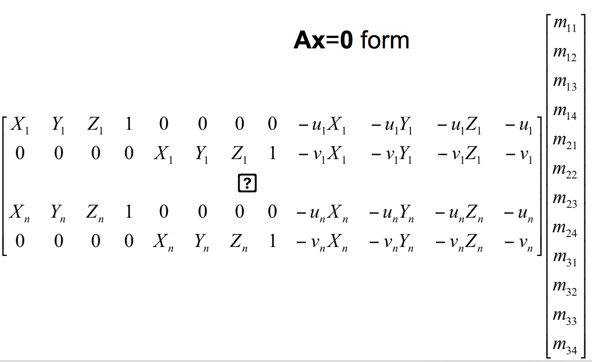
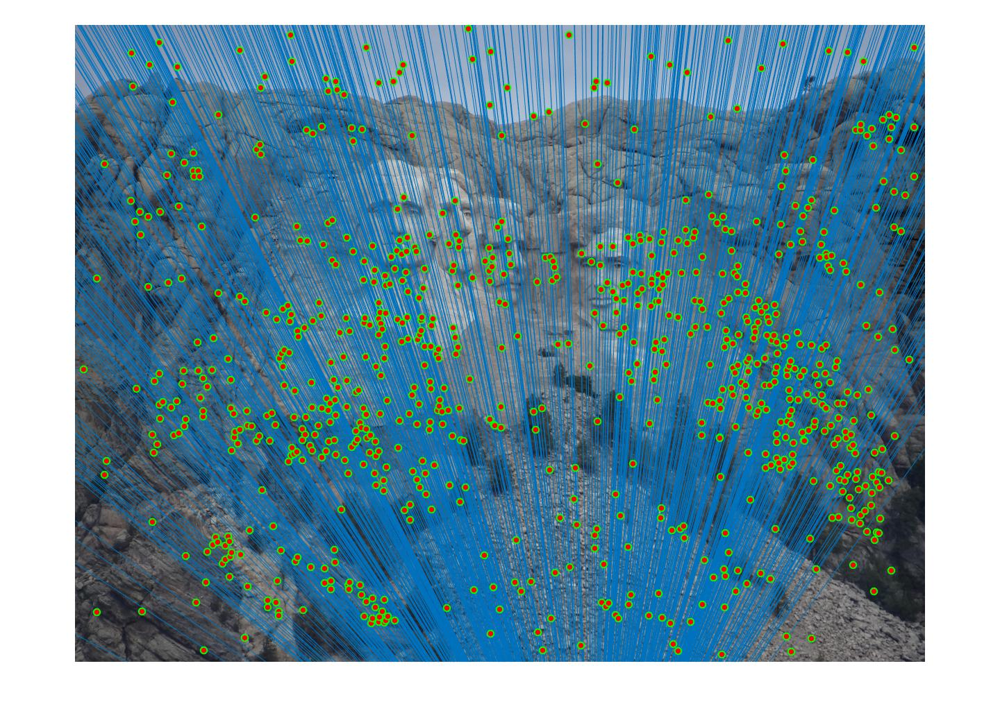
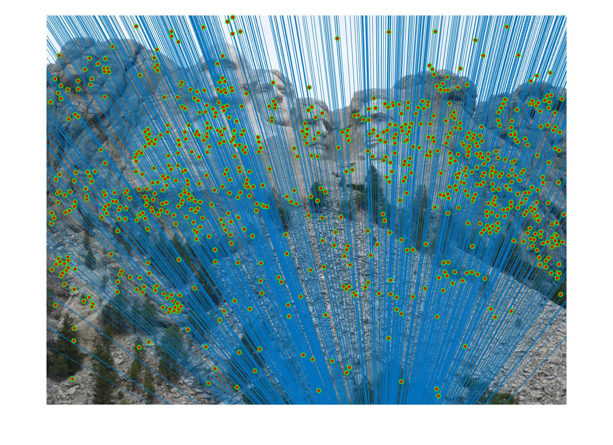
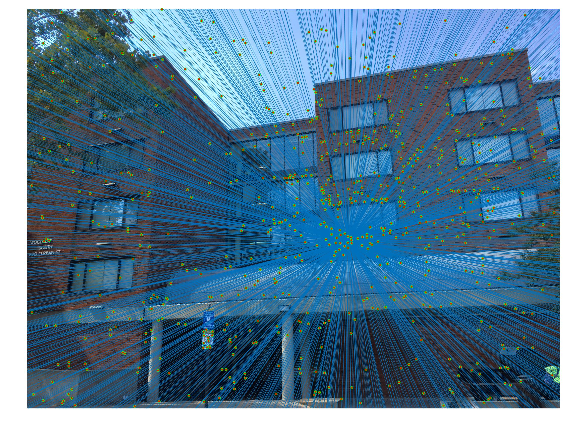
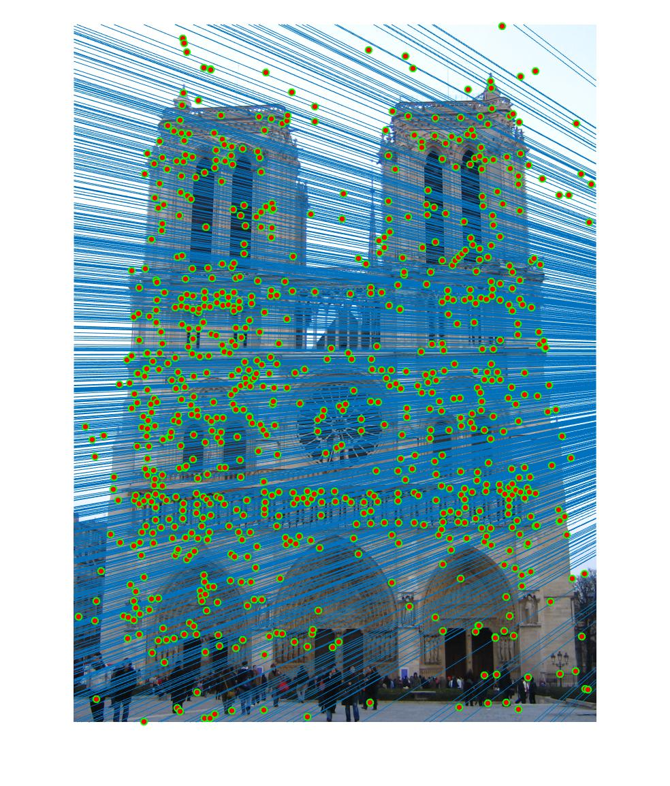
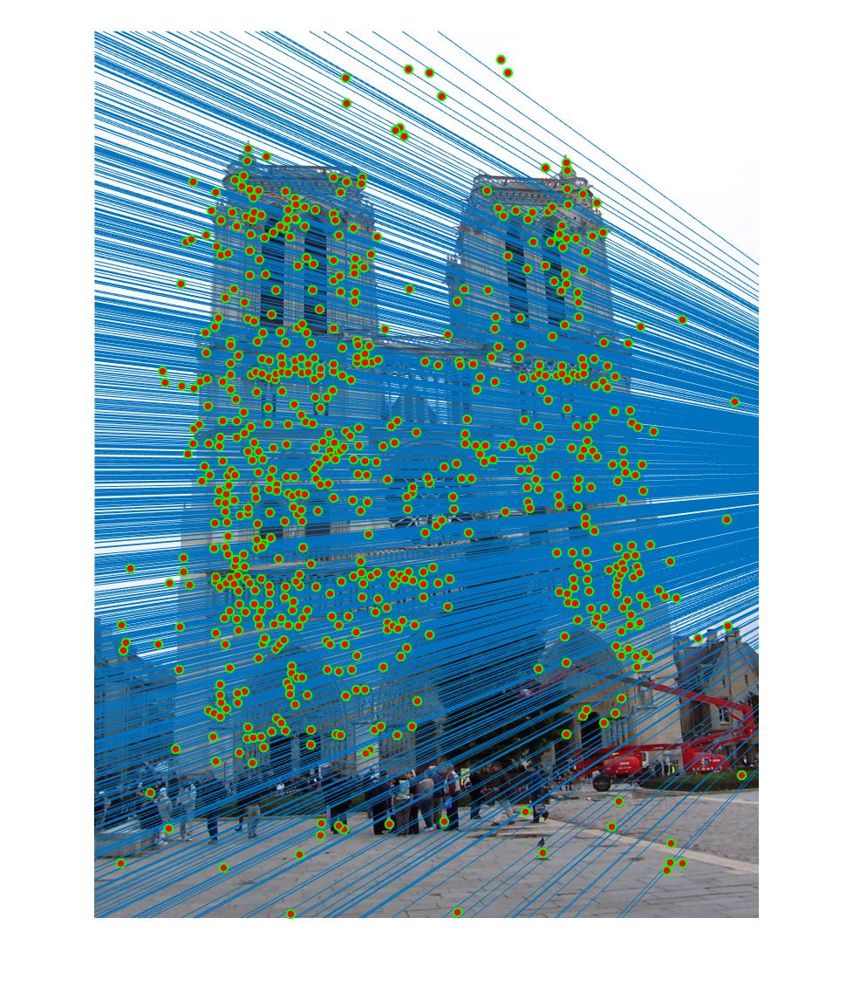
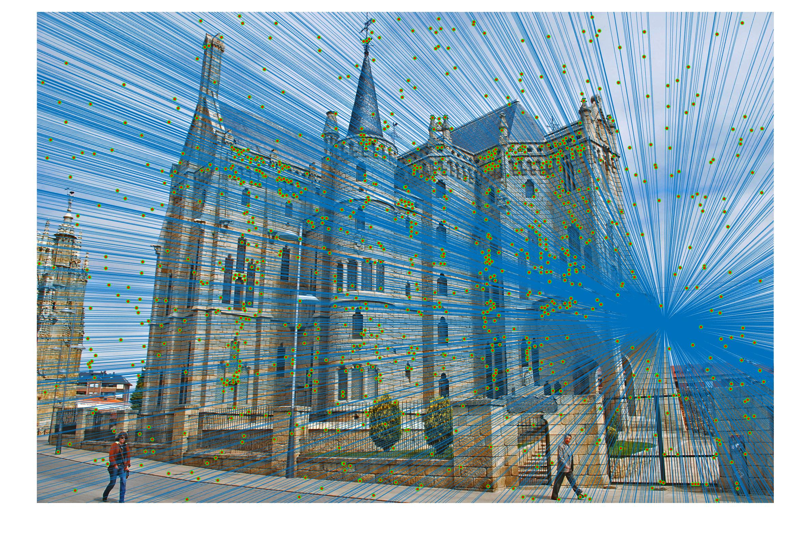
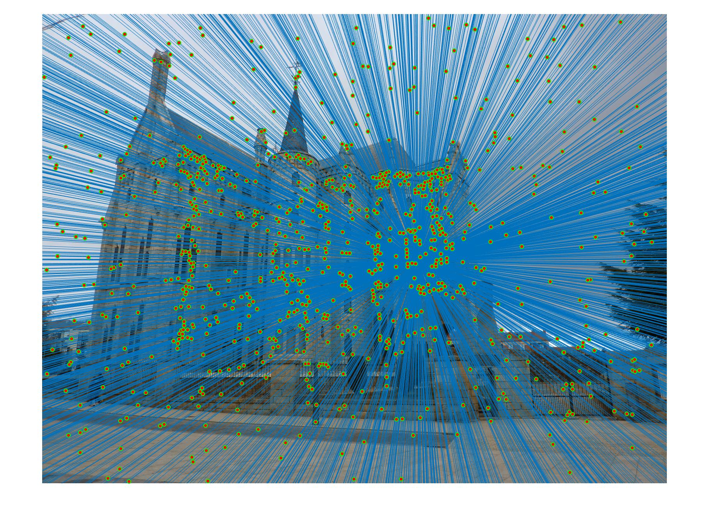

Epipolar Lines
The idea of this project was to understand and implement camera caliberation and learn to implement algorithms to estimate the Fundamental Matrix using RANSAC
The project had three parts.
The first part involves calculating the camera projection matrix which maps world 3D coordinates to image 2D coordinates. I have setup the matrix which forms the system of equations as follows, and then used the SVD method to solve for the variables of the projection matrix with a residual value of 0.0534.
Using the projection matrix we calculate camera center which comes out to (-1.5246, -2.3588, 0.2808).
Camera Position
Point Correspondances
Part 2 of this project required us to calcuate the Fundamental Matrix using a few sample points from two images with known correspondances. The fundamental matrix maps 2D points in one image to 2D points in another image. Usually the fundamental matrix is first calculated using points for which corresponding points in the other image are known.
Part 3 of the project used Fundamental Matrix estimation using the RANSAC algorithm. The RANSAC algorithm as described on Wikipedia is as follows,
Given:
data = a set of observed data points
model = a model that can be fitted to data points
n = the minimum number of data values required to fit the model
k = the maximum number of iterations allowed in the algorithm
t = a threshold value for determining when a data point fits a model
d = the number of close data values required to assert that a model fits well to data
Return:
bestfit = model parameters which best fit the data (or nul if no good model is found)
iterations = 0
bestfit = nul
besterr = something really large
while iterations < k {
maybeinliers = n randomly selected values from data
maybemodel = model parameters fitted to maybeinliers
alsoinliers = empty set
for every point in data not in maybeinliers {
if point fits maybemodel with an error smaller than t
add point to alsoinliers
}
if the number of elements in alsoinliers is > d {
% this implies that we may have found a good model
% now test how good it is
bettermodel = model parameters fitted to all points in maybeinliers and alsoinliers
thiserr = a measure of how well model fits these points
if thiserr < besterr {
bestfit = bettermodel
besterr = thiserr
}
}
increment iterations
}
return bestfit
We find point correspondes in two images using the SIFT functionality of the VFleat package and then randomaly pick these points to calculate the fundamental matrix, running iterations with new samples until a specified number of iterations which is usually high.
I tried using different values for number of iterations of the RANSAC algorithm and different values of the acceptance threshold for each image, and always recieved different results. The results for the images in the project zip are as follows,
|   |
|  |
|   |
|   |